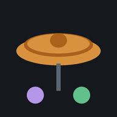

鼓手練習 App
四個獨立的 App，請打開後分別「加到主畫面」安裝。
Linear Grooves練手：手順、Paradiddle、複節奏、線性節奏
Double Pedal 雙踏腳法練腳：雙踏、手腳組合、腳踩鈸、Swing

Djent GroovesDjent 節奏庫：奇數分組跨小節、Gospel chops 線性 Fill
Time Keeper時間感：Gap click、位移節拍器、漸進速度，麥克風聽你打得準不準